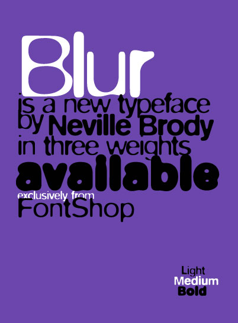

FF Blur
Designed by Neville Brody in 1992
About FF Blur
The digital revolution and the introduction of the Macintosh computer in the mid-1980s made the construction and deconstruction of typographical elements easier than it had been in the past. Embracing technology that was growing exponentially more sophisticated, designers realized more and more complex typographic experiment. Neville Brody's FF Blur is one example. Influenced by the late-1970s punk rock aesthetic, Brody began his career at the London College of Printing and later designed record covers for various artists while art director of Fetish Records. The letterforms of FF Blur—fuzzy around the edges like an out-of-focus photograph—seem to celebrate their own imperfection, speaking to his unique background. FF Blur resembles type that has been reproduced cheaply on a Xerox machine—degenerated through copying and recopying.The quick brown fox jumps over the lazy dog
The quick brown fox jumps over the lazy dog
The quick brown fox jumps over the lazy dog
The quick brown fox jumps over the lazy dog
The quick brown fox jumps over the lazy dog
